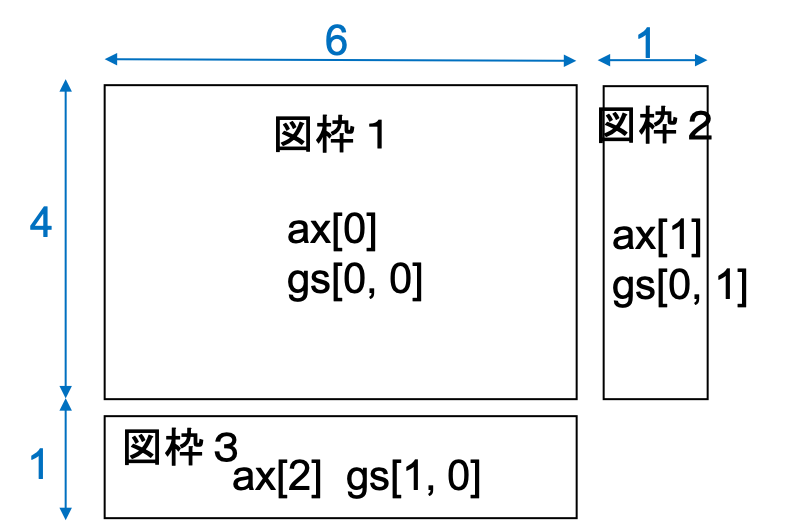
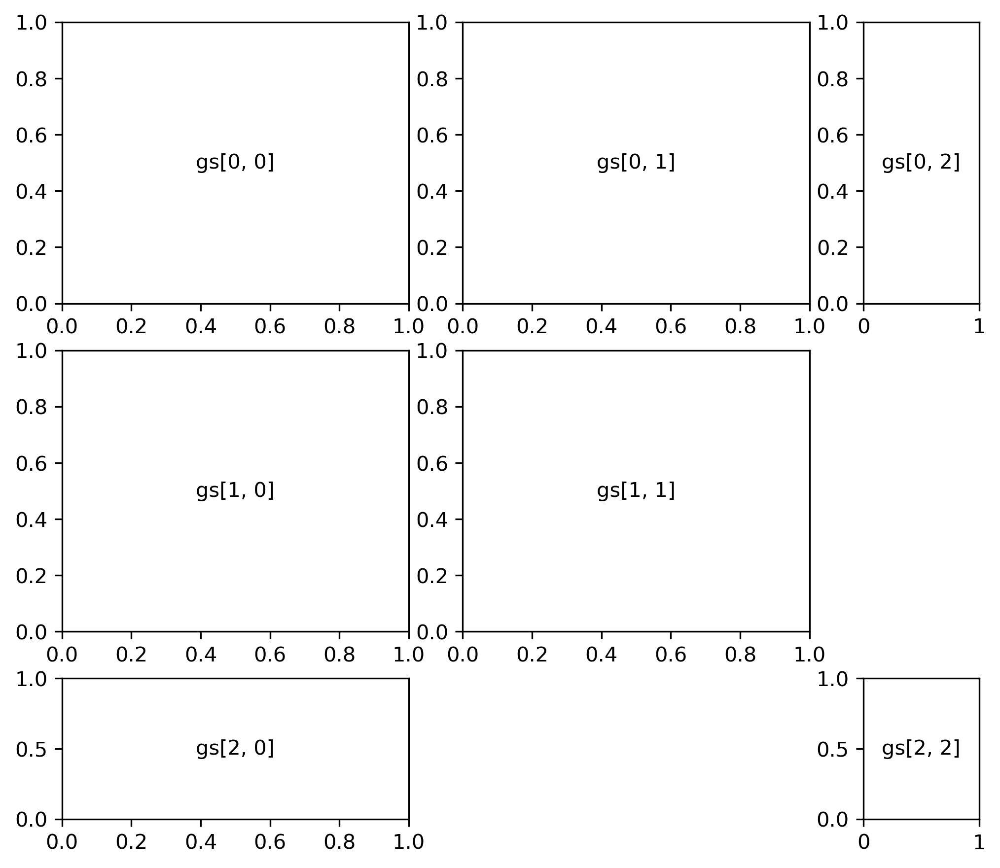
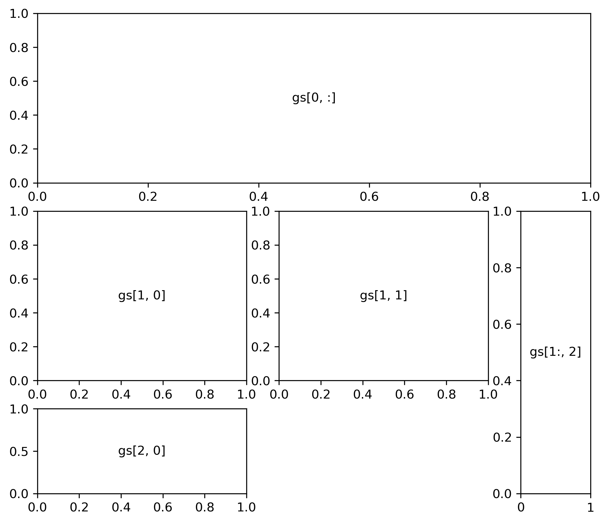

GridSpec
GridSpecのモジュール
gridspectモジュールをインポートする
from matplotlib import gridspec以降はgridspectとして参照できる
GridSpecでサブプロットを生成
gridspec.GridSpecを用いる
gs = gridspec.GridSpec(縦分割数, 横分割数, height_ratios=縦分割比率のタプル, width_ratios=横分割比率のタプル) ax = [plt.subplot(gs[縦軸方向の番号1, 横軸方向の番号1]), ..., plt.subplot(gs[縦軸方向の番号n, 横軸方向の番号n])]
- 縦方向に4：1、横方向に6：1で分割し3つのサブプロット生成
gs = gridspec.GridSpec(2, 2, height_ratios=(4, 1), width_ratios=(6, 1)) ax = [plt.subplot(gs[0, 0]), plt.subplot(gs[0, 1]), plt.subplot(gs[1, 0])]
それぞれの図枠が、gs[0, 0]、gs[0, 1]、gs[1, 0]のように縦軸、横軸の番号をスライスで与えたものと対応 - 3つのサブプロット生成のイメージ 
GridSpecで縦方向に3分割、横方向に3分割する
縦の分割数を表す1番目の引数と横の分割数を表す2番目の引数を3にする
gs = gridspec.GridSpec(3, 3, height_ratios=縦分割比率のタプル, width_ratios=横分割比率のタプル)
- 縦縦軸を2：2：1、横軸を3：3：1に分割し、計7つのサブプロット生成
gs = gridspec.GridSpec(3, 3, height_ratios=(2, 2, 1), width_ratios=(3, 3, 1)) ax = [plt.subplot(gs[0, 0]), plt.subplot(gs[0, 1]), plt.subplot(gs[0, 2]), \ plt.subplot(gs[1, 0]), plt.subplot(gs[1, 1]), plt.subplot(gs[2, 0]), \ plt.subplot(gs[2, 2]) ]
- サブプロット生成のイメージ 
GridSpecで複数の領域にまたがる図枠を作成
分割した領域にまたがる範囲をgs[0, :]のように指定する（コロンは横軸方向全てを使うことを表す）
[top] - 縦横にそれぞれ3分割した後で、計5つのサブプロット生成
gs = gridspec.GridSpec(3, 3, height_ratios=(2, 2, 1), width_ratios=(3, 3, 1)) ax = [plt.subplot(gs[0, :]), \ plt.subplot(gs[1, 0]), plt.subplot(gs[1, 1]), plt.subplot(gs[2, 0]), \ plt.subplot(gs[1:, 2]) ]
- サブプロット生成のイメージ 
複雑な図枠配置を行う場合には、最初に完成後のイメージ図を作った方が良い